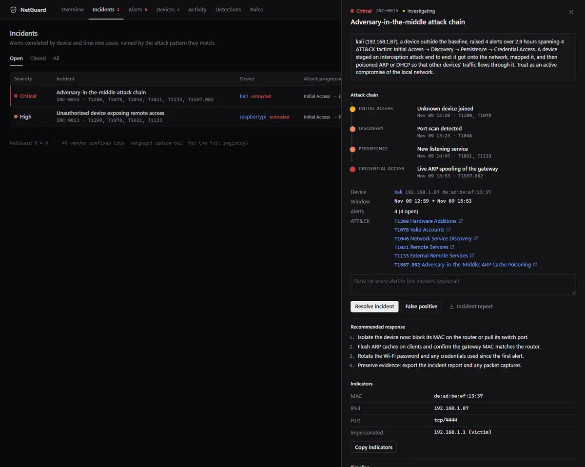
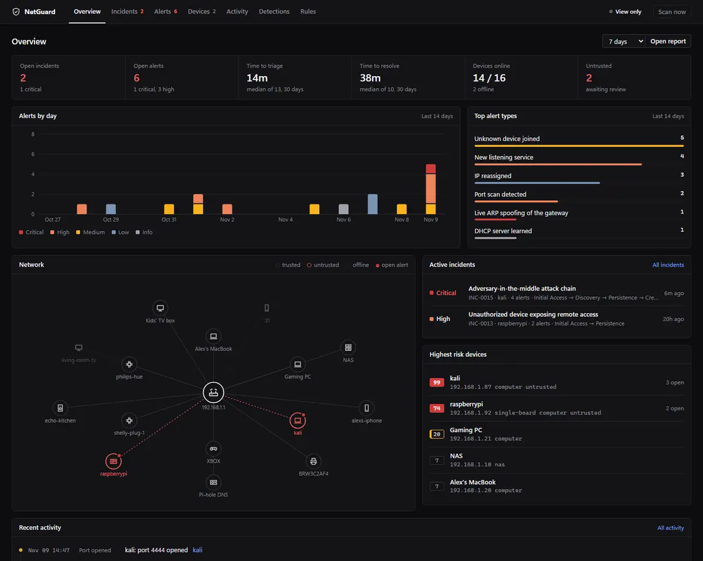
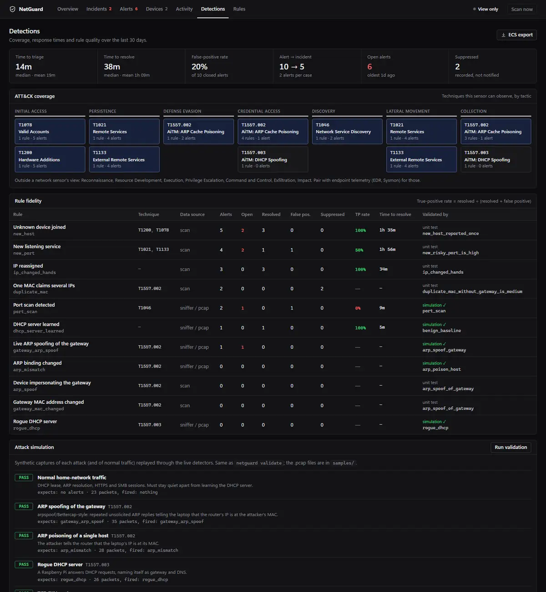

NetGuard
Summary
NetGuard is a network intrusion detection system and SOC console for small networks, written in standard-library Python with no dependencies. It learns what a network normally looks like, flags the changes that signal an intruder or a man-in-the-middle, groups related alerts into incidents with an ATT&CK-mapped attack chain, and measures how quickly and how accurately those alerts get handled. Every detection is proven by a replayable attack simulation that runs in CI.
Problem
A small network has no analyst watching it. A new device joining, a port scan, or a forged ARP reply claiming the router's address are each easy to miss, and seen one at a time they look routine. Four alerts on one device in three hours are one decision, not four, so a pile of alerts is not enough: someone has to turn them into a case, work it, and know whether the rules behind them can be trusted.
I wanted one tool that covers the whole analyst loop on a network I could actually test: detection, correlation, triage, forensics and reporting. And because it is a security tool, its own dashboard could not be the weak spot.
What I built
- Detection engineering. Ten rules, each mapped to MITRE ATT&CK with a severity rationale, documented blind spots and tuning notes: gateway ARP spoofing, rogue DHCP, port scans, new devices and new listening ports, among others.
- Detection validation. Attack simulations that must fire, benign traffic that must not, and one documented gap, all enforced in CI.
- Incident correlation. Alerts grouped by device and time, matched to attack patterns, and escalated when they span several tactics.
- Triage and metrics. A New, Investigating, Resolved or False positive workflow with notes and an audit trail, plus MTTA, MTTR, false-positive rate and per-rule true-positive rate.
- Network forensics. A pcap and pcapng parser written from scratch, replaying the same detections offline with evidence cited by frame number.
- SIEM integration. Alerts out as Elastic Common Schema, CEF (Splunk, QRadar, ArcSight, Sentinel) or syslog, carrying the ATT&CK technique.
- Reporting and playbooks. Auto-drafted Markdown incident reports and a triage checklist per alert type.
- A hardened dashboard. Binds to 127.0.0.1, a Host-header allow-list against DNS rebinding, a CSRF header on state-changing requests, a strict Content-Security-Policy, and CSV exports that neutralize formula injection.
How it works
- Discovery. An in-process ARP sweep needs no admin rights. Optional live capture (scapy) catches ARP and DHCP attacks within seconds.
- Identity is the MAC, not the IP. IPs move on DHCP networks. A MAC changing for a fixed IP, or one MAC holding several IPs, is the real signal.
- Baseline, then diff. The first scan is the baseline. Detection rules are pure functions over a SQLite store, so every rule is unit-tested without a network.
- One detection path. Live packets, capture files and simulations all decode to the same events and go through one
dispatch(), so offline and live results cannot drift apart. - Incidents are derived, not stored. The correlation engine attributes each alert to a device, splits a device's alerts into clusters at gaps longer than 24 hours, and promotes a cluster to an incident if it holds a HIGH alert or two MEDIUMs. Low-level noise stays in the queue. Severity is escalated when a cluster spans three or more ATT&CK tactics.

Evidence
Detection validation replays seven attack simulations through the live detectors, and CI fails if a detection regresses or starts firing on benign traffic:
$ netguard validate
PASS benign_baseline no alerts (false-positive check)
PASS arp_spoof_gateway fires gateway_arp_spoof
PASS arp_poison_host fires arp_mismatch
PASS rogue_dhcp fires rogue_dhcp
PASS port_scan fires port_scan
PASS slow_scan_below_threshold silent: port_scan (known gap)
PASS mitm_kill_chain fires gateway_arp_spoof, port_scan
7/7 passedThe suite runs 120+ tests, on Windows, macOS and Linux (Python 3.11 and 3.13), plus a separate job that replays every scenario.
Written case, INC-0015. I wrote up an adversary-in-the-middle exercise the way an analyst writes an incident report. It is a purple-team lab on a fictional network, not a real compromise. The traffic is a committed capture (162 packets over 208.0 s) that anyone can open in Wireshark, and every frame number in the write-up can be checked against it.
- An unknown device took a DHCP lease, swept the NAS and a laptop for open services, and about 90 seconds later started forging ARP replies claiming the router's address.
- NetGuard raised a HIGH
port_scanat frame 56 (15 ports in 10 s) and a CRITICALgateway_arp_spoofon the first forged packet, frame 148. The 14 replies after it were held back by a 5-minute cooldown, so one condition made one alert. - Correlation turned the alerts into one critical incident spanning four ATT&CK tactics: T1200, T1046, T1021 and T1557.002.
- Going back to the packets showed something the alerts did not: the capture holds two scan sweeps, but the rule's 60-second cooldown folded the second into the first alert. I recorded it as a known behaviour.
- On scope, the capture shows the poisoning was attempted continuously but does not prove it succeeded, so the write-up says to check the victim's ARP cache and assume interception when rotating credentials.

netguard demo). The figures on screen come from fictional demo data.
What I'd do next
- Close the cooldown gap found in INC-0015. Report scan targets in the
port_scanalert and re-alert when a flagged source sweeps a new target during the cooldown. This is on my backlog. - Low-and-slow scans. Scans below the threshold are not detected. It is documented and tested as a known gap.
- Better placement. On Wi-Fi a sniffer sees broadcast traffic and its own only, so unicast poisoning aimed at other devices can be invisible. A wired sensor on a mirror port or offline pcap analysis has no such limit.
- Beyond the network. A network sensor cannot see tactics such as execution or privilege escalation, so NetGuard lists them as out of view and says to pair it with EDR or Sysmon. It is also IPv4 only.